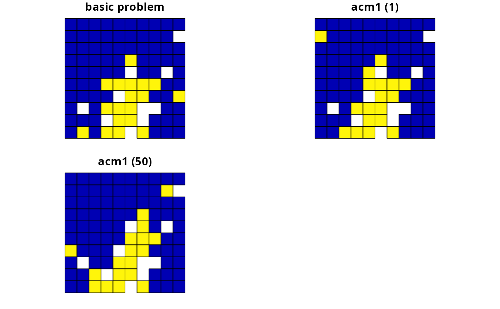
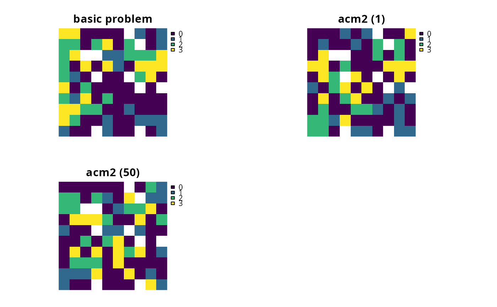
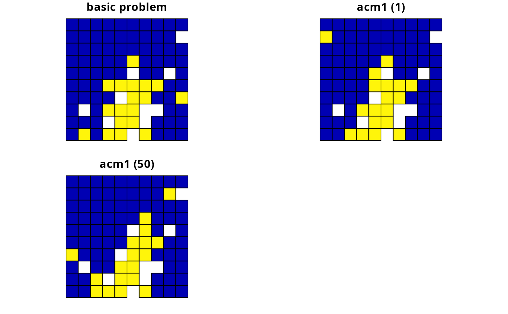
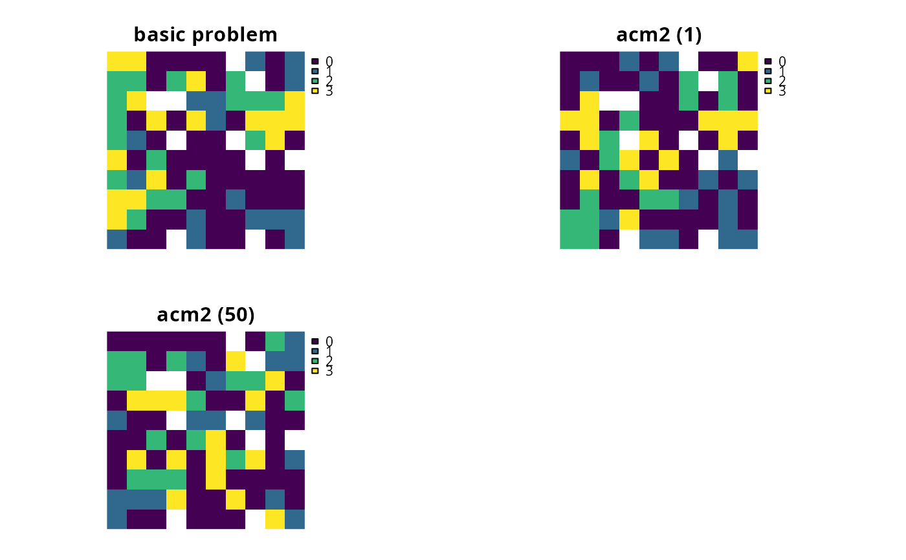

Add asymmetric connectivity penalties
Source:R/add_asym_connectivity_penalties.R
add_asym_connectivity_penalties.RdAdd penalties to a conservation planning problem to account for asymmetric connectivity between planning units. Asymmetric connectivity data describe connectivity information that is directional. For example, asymmetric connectivity data could describe the strength of rivers flowing between different planning units. Since river flow is directional, the level of connectivity from an upstream planning unit to a downstream planning unit would be higher than that from a downstream planning unit to an upstream planning unit.
Usage
# S4 method for ConservationProblem,ANY,ANY,matrix
add_asym_connectivity_penalties(x, penalty, zones, data)
# S4 method for ConservationProblem,ANY,ANY,Matrix
add_asym_connectivity_penalties(x, penalty, zones, data)
# S4 method for ConservationProblem,ANY,ANY,data.frame
add_asym_connectivity_penalties(x, penalty, zones, data)
# S4 method for ConservationProblem,ANY,ANY,dgCMatrix
add_asym_connectivity_penalties(x, penalty, zones, data)
# S4 method for ConservationProblem,ANY,ANY,array
add_asym_connectivity_penalties(x, penalty, zones, data)Arguments
- x
problem()object.- penalty
numericpenalty that is used to scale the importance of selecting planning units with strong connectivity between them compared to the main problem objective (e.g., solution cost when the argument toxhas a minimum set objective set usingadd_min_set_objective()). Higherpenaltyvalues can be used to obtain solutions with a high degree of connectivity, and smallerpenaltyvalues can be used to obtain solutions with a small degree of connectivity. Note that negativepenaltyvalues can be used to obtain solutions that have very little connectivity.- zones
matrixorMatrixobject describing the level of connectivity between different zones. Each row and column corresponds to a different zone in the argument tox, and cell values indicate the level of connectivity between each combination of zones. Cell values along the diagonal of the matrix represent the level of connectivity between planning units allocated to the same zone. Cell values must lay between 1 and -1, where negative values favor solutions with weak connectivity. The default argument tozonesis an identity matrix (i.e., a matrix with ones along the matrix diagonal and zeros elsewhere), so that planning units are only considered to be connected when they are allocated to the same zone. This argument is required when working with multiple zones and the argument todatais amatrixorMatrixobject. If the argument todatais anarrayordata.framewith data for multiple zones (e.g., using the"zone1"and"zone2"column names), this argument must explicitly be set toNULLotherwise an error will be thrown.- data
matrix,Matrix,data.frame, orarrayobject containing connectivity data. The connectivity values correspond to the strength of connectivity between different planning units. Thus connections between planning units that are associated with higher values are more favorable in the solution. See the Data format section for more information.
Value
An updated problem() object with the penalties added to it.
Details
This function adds penalties to conservation planning problem to penalize solutions that have low connectivity. Specifically, it penalizes solutions that select planning units that share high connectivity values with other planning units that are not selected by the solution (based on Beger et al. 2010).
Mathematical formulation
The connectivity penalties are implemented using the following equations.
Let \(I\) represent the set of planning units
(indexed by \(i\) or \(j\)), \(Z\) represent the set
of management zones (indexed by \(z\) or \(y\)), and \(X_{iz}\)
represent the decision variable for planning unit \(i\) for in zone
\(z\) (e.g., with binary
values one indicating if planning unit is allocated or not). Also, let
\(p\) represent the argument to penalty, \(D\) represent the
argument to data, and \(W\) represent the argument
to zones.
If the argument to data is supplied as a matrix or
Matrix object, then the penalties are calculated as:
$$ \sum_{i}^{I} \sum_{j}^{I} \sum_{z}^{Z} \sum_{y}^{Z} (p \times X_{iz} \times D_{ij} \times W_{zy}) - \sum_{i}^{I} \sum_{j}^{I} \sum_{z}^{Z} \sum_{y}^{Z} (p \times X_{iz} \times X_{jy} \times D_{ij} \times W_{zy})$$
Otherwise, if the argument to data is supplied as an
array object, then the penalties are
calculated as:
$$ \sum_{i}^{I} \sum_{j}^{I} \sum_{z}^{Z} \sum_{y}^{Z} (p \times X_{iz} \times D_{ijzy}) - \sum_{i}^{I} \sum_{j}^{I} \sum_{z}^{Z} \sum_{y}^{Z} (p \times X_{iz} \times X_{jy} \times D_{ijzy})$$
Note that when the problem objective is to maximize some measure of benefit and not minimize some measure of cost, the term \(p\) is replaced with \(-p\).
Data format
The argument to data can be specified using several different formats.
dataas amatrix/Matrixobjectwhere rows and columns represent different planning units and the value of each cell represents the strength of connectivity between two different planning units. Cells that occur along the matrix diagonal are treated as weights which indicate that planning units are more desirable in the solution. The argument to
zonescan be used to control the strength of connectivity between planning units in different zones. The default argument forzonesis to treat planning units allocated to different zones as having zero connectivity.dataas adata.frameobjectcontaining columns that are named
"id1","id2", and"boundary". Here, each row denotes the connectivity between a pair of planning units (per values in the"id1"and"id2"columns) following the Marxan format. If the argument toxcontains multiple zones, then the"zone1"and"zone2"columns can optionally be provided to manually specify the connectivity values between planning units when they are allocated to specific zones. If the"zone1"and"zone2"columns are present, then the argument tozonesmust beNULL.dataas anarrayobjectcontaining four-dimensions where cell values indicate the strength of connectivity between planning units when they are assigned to specific management zones. The first two dimensions (i.e., rows and columns) indicate the strength of connectivity between different planning units and the second two dimensions indicate the different management zones. Thus the
data[1, 2, 3, 4]indicates the strength of connectivity between planning unit 1 and planning unit 2 when planning unit 1 is assigned to zone 3 and planning unit 2 is assigned to zone 4.
References
Beger M, Linke S, Watts M, Game E, Treml E, Ball I, and Possingham, HP (2010) Incorporating asymmetric connectivity into spatial decision making for conservation, Conservation Letters, 3: 359--368.
See also
See penalties for an overview of all functions for adding penalties.
Other penalties:
add_boundary_penalties(),
add_connectivity_penalties(),
add_feature_weights(),
add_linear_penalties()
Examples
# \dontrun{
# load package
library(Matrix)
# set seed for reproducibility
set.seed(600)
# load data
sim_pu_polygons <- get_sim_pu_polygons()
sim_features <- get_sim_features()
sim_zones_pu_raster <- get_sim_zones_pu_raster()
sim_zones_features <- get_sim_zones_features()
# define function to rescale values between zero and one so that we
# can compare solutions from different connectivity matrices
rescale <- function(x, to = c(0, 1), from = range(x, na.rm = TRUE)) {
(x - from[1]) / diff(from) * diff(to) + to[1]
}
# create basic problem
p1 <-
problem(sim_pu_polygons, sim_features, "cost") %>%
add_min_set_objective() %>%
add_relative_targets(0.2) %>%
add_default_solver(verbose = FALSE)
# create an asymmetric connectivity matrix. Here, connectivity occurs between
# adjacent planning units and, due to rivers flowing southwards
# through the study area, connectivity from northern planning units to
# southern planning units is ten times stronger than the reverse.
acm1 <- matrix(0, nrow(sim_pu_polygons), nrow(sim_pu_polygons))
acm1 <- as(acm1, "Matrix")
centroids <- sf::st_coordinates(
suppressWarnings(sf::st_centroid(sim_pu_polygons))
)
adjacent_units <- sf::st_intersects(sim_pu_polygons, sparse = FALSE)
for (i in seq_len(nrow(sim_pu_polygons))) {
for (j in seq_len(nrow(sim_pu_polygons))) {
# find if planning units are adjacent
if (adjacent_units[i, j]) {
# find if planning units lay north and south of each other
# i.e., they have the same x-coordinate
if (centroids[i, 1] == centroids[j, 1]) {
if (centroids[i, 2] > centroids[j, 2]) {
# if i is north of j add 10 units of connectivity
acm1[i, j] <- acm1[i, j] + 10
} else if (centroids[i, 2] < centroids[j, 2]) {
# if i is south of j add 1 unit of connectivity
acm1[i, j] <- acm1[i, j] + 1
}
}
}
}
}
# linearly re-scale matrix values to range between zero and one
acm1[] <- rescale(acm1[])
# visualize asymmetric connectivity matrix
image(acm1)
 # create penalties
penalties <- c(1, 50)
# create problems using the different penalties
p2 <- list(
p1,
p1 %>% add_asym_connectivity_penalties(penalties[1], data = acm1),
p1 %>% add_asym_connectivity_penalties(penalties[2], data = acm1)
)
# solve problems
s2 <- lapply(p2, solve)
# create object with all solutions
s2 <- sf::st_sf(
tibble::tibble(
p2_1 = s2[[1]]$solution_1,
p2_2 = s2[[2]]$solution_1,
p2_3 = s2[[3]]$solution_1
),
geometry = sf::st_geometry(s2[[1]])
)
names(s2)[1:3] <- c("basic problem", paste0("acm1 (", penalties,")"))
# plot solutions based on different penalty values
plot(s2, cex = 1.5)

# create minimal multi-zone problem and limit solver to one minute
# to obtain solutions in a short period of time
p3 <-
problem(sim_zones_pu_raster, sim_zones_features) %>%
add_min_set_objective() %>%
add_relative_targets(matrix(0.15, nrow = 5, ncol = 3)) %>%
add_binary_decisions() %>%
add_default_solver(time_limit = 60, verbose = FALSE)
# crate asymmetric connectivity data by randomly simulating values
acm2 <- matrix(
runif(ncell(sim_zones_pu_raster) ^ 2),
nrow = ncell(sim_zones_pu_raster)
)
# create multi-zone problems using the penalties
p4 <- list(
p3,
p3 %>% add_asym_connectivity_penalties(penalties[1], data = acm2),
p3 %>% add_asym_connectivity_penalties(penalties[2], data = acm2)
)
# solve problems
s4 <- lapply(p4, solve)
s4 <- lapply(s4, category_layer)
s4 <- terra::rast(s4)
names(s4) <- c("basic problem", paste0("acm2 (", penalties,")"))
# plot solutions
plot(s4, axes = FALSE)

# }
# create penalties
penalties <- c(1, 50)
# create problems using the different penalties
p2 <- list(
p1,
p1 %>% add_asym_connectivity_penalties(penalties[1], data = acm1),
p1 %>% add_asym_connectivity_penalties(penalties[2], data = acm1)
)
# solve problems
s2 <- lapply(p2, solve)
# create object with all solutions
s2 <- sf::st_sf(
tibble::tibble(
p2_1 = s2[[1]]$solution_1,
p2_2 = s2[[2]]$solution_1,
p2_3 = s2[[3]]$solution_1
),
geometry = sf::st_geometry(s2[[1]])
)
names(s2)[1:3] <- c("basic problem", paste0("acm1 (", penalties,")"))
# plot solutions based on different penalty values
plot(s2, cex = 1.5)

# create minimal multi-zone problem and limit solver to one minute
# to obtain solutions in a short period of time
p3 <-
problem(sim_zones_pu_raster, sim_zones_features) %>%
add_min_set_objective() %>%
add_relative_targets(matrix(0.15, nrow = 5, ncol = 3)) %>%
add_binary_decisions() %>%
add_default_solver(time_limit = 60, verbose = FALSE)
# crate asymmetric connectivity data by randomly simulating values
acm2 <- matrix(
runif(ncell(sim_zones_pu_raster) ^ 2),
nrow = ncell(sim_zones_pu_raster)
)
# create multi-zone problems using the penalties
p4 <- list(
p3,
p3 %>% add_asym_connectivity_penalties(penalties[1], data = acm2),
p3 %>% add_asym_connectivity_penalties(penalties[2], data = acm2)
)
# solve problems
s4 <- lapply(p4, solve)
s4 <- lapply(s4, category_layer)
s4 <- terra::rast(s4)
names(s4) <- c("basic problem", paste0("acm2 (", penalties,")"))
# plot solutions
plot(s4, axes = FALSE)

# }